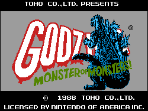
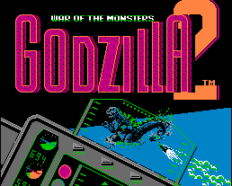

Godzilla (NESA)

This is a combination war strategy game and scrolling shooter. You control
Godzilla and Mothra as they move around a grid to gain position on the advancing
enemies. Moving from square to square can cause you to enter a scrolling
shooting stage where you must destroy the enemy guns, ships, and other
objects.
Godzilla 2 (NESA)

This is a war strategy game where you control the military. The military
must stop Godzilla and other creatures from destroying the city.
GB Godzilla (VGB)
![[GB Godzilla]](images/GB/gojira1.gif) This is a side-scrolling game where you guide Godzilla as he rampages and
destroys the ships, etc. that shoot at him.
This is a side-scrolling game where you guide Godzilla as he rampages and
destroys the ships, etc. that shoot at him.
Godzilla (VGB)
![[Godzilla]](images/GB/godzila.gif) This is a puzzle game where you must guide a cute looking Godzilla (who looks
remarkably similar to the main character from Bubble Bobble) from stage
to stage. Each puzzle seems to consist of dodging the creatures chasing you
while trying to break or position the rocks to solve the puzzle.
This is a puzzle game where you must guide a cute looking Godzilla (who looks
remarkably similar to the main character from Bubble Bobble) from stage
to stage. Each puzzle seems to consist of dodging the creatures chasing you
while trying to break or position the rocks to solve the puzzle.
Return to Emulator Table of Contents
Last Modified 21 April 1997
Created 6 Jan 1997
Luis A. Cruz
cruzl@ccs.neu.edu